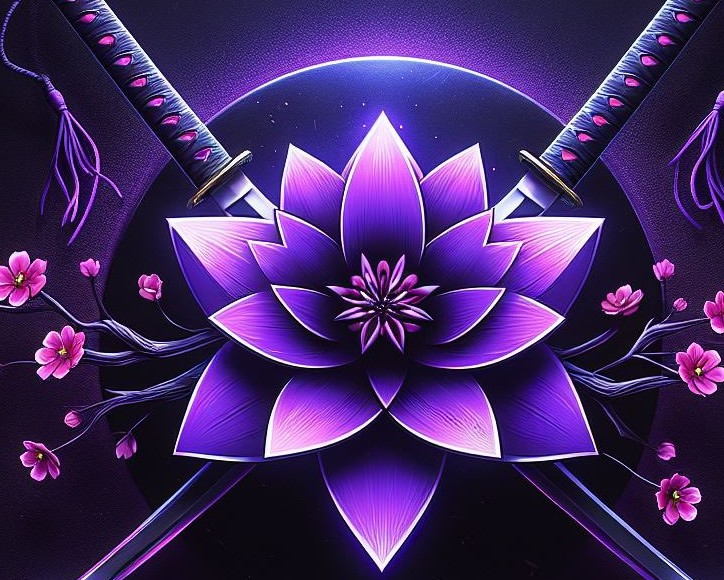
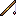
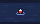
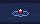
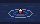
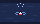
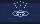
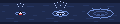

Une seule touche pour lancer, ferrer et relancer. Tous les états côte à côte : point d'entrée (écran Artisans et mode réduit), fenêtre de session posée sur le jeu, fin de session, combat, erreurs et réglage de la touche. Couleurs tirées des jetons de la charte : accent braise des Artisans, bouton principal améthyste. Les animations sont des images PNG en pixel art, une par étape, dans peche/.
1. Point d'entrée
La pêche est un métier : le point d'entrée vit dans les Artisans. Un panneau « Pêche en un bouton » dans la colonne de droite de l'écran Artisans, sous « Mes métiers », et un gros bouton dans l'onglet Artisans du mode réduit.
Écran Artisans · 1000 × 680

VXV
La forge · annuaireQui peut fabriquer… ?
Métiers3 artisans trouvésAlchimie
Flacon des TitansAlchimie 300 · Feuille de chêne noir ×30, Lotus noir, Sauge-argent des montagnes ×10
ArtisanNiveauMis à jour
ThessaEn ligne · Orgrimmar300il y a 2 j
MorganeReroll de Kaelys · hors ligne300il y a 6 j
NahriHors ligne295il y a 3 sem.
Main et rerolls inclus · données relevées quand l'artisan ouvre sa fenêtre de métier.
Mes métiers
Vorn· Forge300
Vorn· Minage275
Vorn· Pêche225

Pêche en un boutonLance, ferre, relance : une seule touche. Ton arme revient à la fin.
Quête en cours : Le Grand Pêcheur5e
Touche F
Astuce du forgeronOuvre la fenêtre de chaque métier, sur chaque personnage, pour que la guilde sache ce que tu sais fabriquer.
Le panneau prend le liseré braise des Artisans ; bouton principal améthyste. La ligne « Quête en cours » n'apparaît que si une quête de pêche est publiée. La pêche s'ajoute à « Mes métiers » (barre braise unie : pas de dégradé dans le jeu).
Mode réduit · 420 × 600
VXVmode réduit
Ton métier · pêche
Vorn· Pêche225 / 300
Quête en cours : Le Grand Pêcheur5e · 90 prises
Touche de pêche F
Dernière session
23 prises · 18:40Meilleure : Poisson-chat boueux
hier
3 métiers suivisSynchro il y a 4 min
Artisans n'a pas d'onglet court : il sort du menu « … », et l'onglet « … » prend le nom du lieu choisi tant qu'il est ouvert. Sans canne ni métier de pêche, la carte « Ton métier » disparaît et le bouton reste seul.
2. Fenêtre de session · 300 × 160
Petite fenêtre déplaçable (on la tire par sa barre), posée sur le jeu. Toujours visibles : touche sur le bouton, prises, durée, quête de pêche et sa barre (comme missionProgress, en améthyste sur fond sombre), « Quitter la session ».
Pêcher · canne équipée, prêt
Session de pêcheArtisans
Canne équipée · prêt
12 prises08:42
Le Grand Pêcheur · 5e102 / 252
Bouton principal améthyste. Clic ou touche F : lancer la ligne.
En pêche · bouton « Ferrer »
Session de pêcheArtisans
Guette le bouchon… 14 s
12 prises08:48
Le Grand Pêcheur · 5e102 / 252
Bouton or (action à faire). Ondes en boucle : 4 images, 0,3 s chacune. Minuteur de 20 s en chiffres et en barre qui se vide au pied du bouton.
Ferré · éclaboussure (0,45 s)
Session de pêcheArtisans
Ferré !
12 prises08:55
Le Grand Pêcheur · 5e102 / 252
Transition jouée une fois au clic sur « Ferrer » : 3 images, 0,15 s chacune, puis « Prise ! ».
Prise ! · 2 s puis retour à « Pêcher »
Session de pêcheArtisans
+1 · Germon arc-en-ciel
13 prises08:57
Le Grand Pêcheur · 5e103 / 252
Bouton bois à liseré or, inactif 2 s (barre or qui se vide). Icône de l'objet = la vraie icône du jeu cerclée d'améthyste (ici une image d'exemple), nom dans la couleur de qualité de l'objet. Le compteur de prises passe en vert.
Démo animée · cycle complet
Session de pêcheArtisans
Canne équipée · prêt
12 prises08:42
Le Grand Pêcheur · 5e102 / 252
Clique le bouton (ou touche F de ton clavier) : lancer, ferrer, prise. Sans clic, la ligne se relève seule au bout de 20 s.
3. Fin de session
Après « Quitter la session » (ou la touche Échap) : la fenêtre s'agrandit un peu (300 × 196) pour le récapitulatif, l'arme est rééquipée.
Récapitulatif · 300 × 196
Session terminéeArtisans
Prises23
Durée18:40
Quête4e
Meilleure prisePoisson-chat boueux
Arme rééquipée
« Quête » = place dans la quête de pêche en cours, si elle existe (sinon la case disparaît et les deux autres s'élargissent). Meilleure prise = l'objet de plus haute qualité, nom dans sa couleur de qualité.
4. Combat
Un bandeau rouge (encre ink-loss) en tête de la fenêtre. Deux cas : l'arme a pu être rééquipée et la session est fermée, ou le jeu bloque l'équipement en combat et il faut la touche de pêche (action protégée, liée à une touche).
Session fermée, arme rééquipée
Combat ! Session fermée, arme rééquipée
En combat
12 prises08:42
Le Grand Pêcheur · 5e102 / 252
La fenêtre se ferme seule 3 s après la fin du combat, avec le récapitulatif.
Touche de pêche pour reprendre l'arme
Combat ! Appuie sur ta touche de pêche pour reprendre ton arme
Canne encore en mainEn combat, le jeu n'équipe une arme que sur une touche.Appuie sur F
Le bouton passe au rouge, la lettre de la touche en grand et un liseré or qui clignote (2 étapes).
5. Erreurs
Bandeau d'erreur en contour (fond rouge 22 %, texte loss) pour ne pas se confondre avec l'alerte de combat en aplat. Le gros bouton est grisé.
Aucune canne
Aucune canne à pêche dans tes sacs
Mets une canne à pêche dans tes sacs, puis relance la session.
Impossible en combat
Impossible pendant un combat
Attends la fin du combat : la session se lancera d'un clic.
Même erreur au point d'entrée
Pêche en un bouton
Aucune canne à pêche dans tes sacs
Dans l'écran Artisans et le mode réduit, l'erreur s'affiche sous le bouton, sans ouvrir la fenêtre de session.
6. Réglage de la touche
Dans le panneau de l'écran Artisans, le mode réduit et la fenêtre de session (clic droit sur la lettre du bouton).
Touche réglée
Touche de pêche : F
Sert aussi à reprendre ton arme en combat.
En attente d'une touche
Touche de pêche : …
Appuie sur une touche…Échap pour annuler.
Le panneau prend le liseré or (comme un survol) le temps de l'écoute ; la case de la touche clignote en 2 étapes.
Touche déjà prise
Touche de pêche : G
G était liée à « Sac à dos » : remplacée.
État suggéré en plus : prévenir quand la nouvelle touche remplace un raccourci du jeu.
Images fournies
PNG en pixel art à la taille native (à afficher en NEAREST, ×2 dans le gros bouton). Une image par étape, et la même suite en bande horizontale pour l'animation.
onde-1 → onde-4 · 40×24



En pêche, en boucle, 0,3 s par étape.
eclaboussure-1 → 3 · 40×24


Au ferrage, une fois, 0,15 s par étape.
canne · poisson · 16×16Canne : icône du bouton et du panneau. Poisson : exemple seulement, le jeu donne la vraie icône de la prise.
ondes-bande · eclaboussure-bande

Pour SetTexCoord étape par étape, ou en CSS steps().